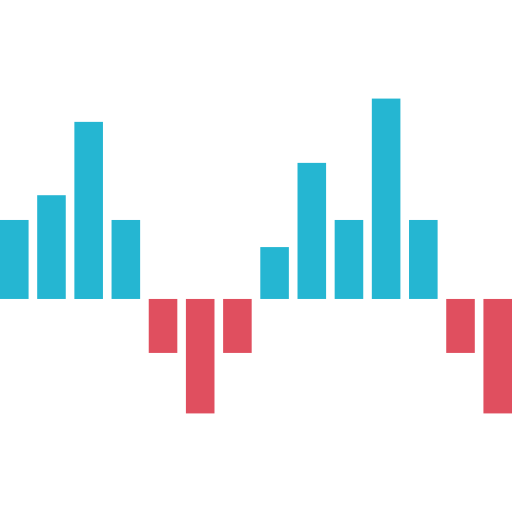

<mat-sidenav-container class="example-container sidebar_padding">
  <mat-sidenav class="sidebar" #sidenav mode="side" [(opened)]="sideBarData.sidebar_open"
               (opened)="events.push('open!')"
               (closed)="events.push('close!')">
    <div class="container sidebar_padding">
      <ul id="sidebar_ul" class="list-sidebar bg-defoult list-unstyled">
        <li><a href="#" data-toggle="collapse" data-target="#dashboard" class="collapsed active">
          
          <span class="nav-label"> Finance </span> <span class="fa fa-chevron-left pull-right"></span> </a>
          <ul class="sub-menu collapse" id="dashboard">
            <li routerLink="{{item.item_url}}" *ngFor="let item of side_menu_items">
              <a routerLink="{{item.item_url}}">{{item.item_name}}</a>
            </li>

          </ul>
        </li>
      </ul>
    </div>
  </mat-sidenav>

  <mat-sidenav-content>

    <div class="container">
      <app-top-nav-bar></app-top-nav-bar>
    </div>

    <router-outlet></router-outlet>
  </mat-sidenav-content>
</mat-sidenav-container>


